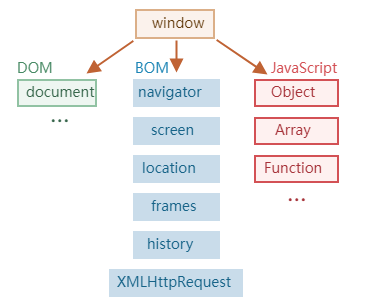
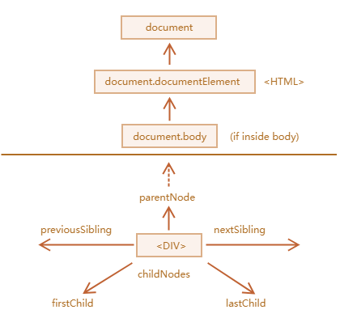
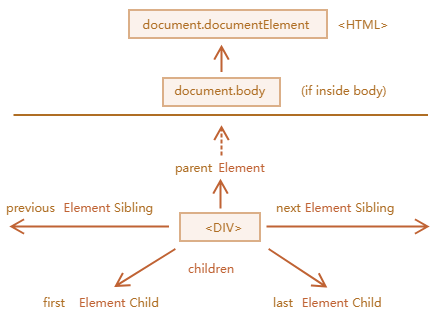
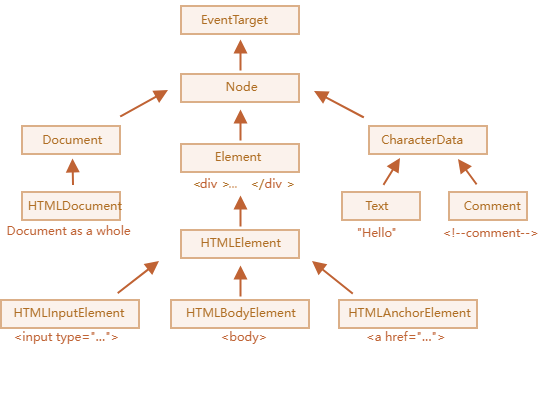

全面梳理 DOM 与 BOM 的核心概念与用法，包括节点的访问与遍历、元素的搜索与筛选、文档结构的动态创建与修改、样式操作、窗口尺寸与滚动控制等内容，帮助前端开发者打牢文档结构控制的基础能力。

文档对象模型（DOM）
文档对象模型（Document Object Model），简称 DOM，将所有页面内容表示为可以修改的对象。
document
对象是页面的主要“入口点”。我们可以使用它来更改或创建页面上的任何内容。
1 | // 将背景颜色修改为红色 |
浏览器对象模型（BOM）
浏览器对象模型（Browser Object Model），简称 BOM，表示由浏览器（主机环境）提供的用于处理文档（document）之外的所有内容的其他对象。
- navigator
对象提供了有关浏览器和操作系统的背景信息。navigator
有许多属性，但是最广为人知的两个属性是：
navigator.userAgent—— 关于当前浏览器，navigator.platform—— 关于平台（有助于区分 Windows/Linux/Mac 等）。 - location 对象允许我们读取当前 URL，并且可以将浏览器重定向到新的 URL。
这是我们可以如何使用 location 对象的方法：
1 | alert(location.href); // 显示当前 URL |
函数 alert/confirm/prompt 也是 BOM
的一部分：它们与文档（document）没有直接关系，但它代表了与用户通信的纯浏览器方法。
DOM 遍历

纯元素导航
上面列出的导航（navigation）属性引用 所有
节点。例如，在 childNodes
中我们可以看到文本节点，元素节点，甚至包括注释节点（如果它们存在的话）。
但是对于很多任务来说，我们并不想要文本节点或注释节点。我们希望操纵的是代表标签的和形成页面结构的元素节点。
所以，让我们看看更多只考虑 元素节点 的导航链接（navigation link）：

这些链接和我们在上面提到过的类似，只是在词中间加了
Element：
children—— 仅那些作为元素节点的子代的节点。firstElementChild，lastElementChild—— 第一个和最后一个子元素。previousElementSibling，nextElementSibling—— 兄弟元素。parentElement—— 父元素。
指定元素搜索
document.getElementById
1 | <div id="elem"> |
querySelectorAll
到目前为止，最通用的方法是
elem.querySelectorAll(css)，它返回 elem
中与给定 CSS 选择器匹配的所有元素。
在这里，我们查找所有为最后一个子元素的 <li>
元素：
1 | <ul> |
querySelector
elem.querySelector(css) 调用会返回给定 CSS
选择器的第一个元素。
matches
1 | <a href="http://example.com/file.zip">...</a> |
closest
元素的祖先（ancestor）是：父级，父级的父级，它的父级等。祖先们一起组成了从元素到顶端的父级链。
elem.closest(css) 方法会查找与 CSS
选择器匹配的最近的祖先。elem 自己也会被搜索。
换句话说，方法 closest
在元素中得到了提升，并检查每个父级。如果它与选择器匹配，则停止搜索并返回该祖先。
1 | <h1>Contents</h1> |
实时的集合
所有的 "getElementsBy*" 方法都会返回一个
实时的（live）
集合。这样的集合始终反映的是文档的当前状态，并且在文档发生更改时会“自动更新”。
1 | <div>First div</div> |
相反，querySelectorAll 返回的是一个
静态的 集合。就像元素的固定数组。
1 | <div>First div</div> |
现在我们可以很容易地看到不同之处。在文档中出现新的 div
后，静态集合并没有增加。
节点属性
不同的 DOM 节点可能有不同的属性。例如，标签 <a>
相对应的元素节点具有链接相关的（link-related）属性，标签
<input>
相对应的元素节点具有与输入相关的属性，等。文本节点与元素节点不同。但是所有这些标签对应的
DOM 节点之间也存在共有的属性和方法，因为所有类型的 DOM
节点都形成了一个单一层次的结构（single hierarchy）。
每个 DOM 节点都属于相应的内建类。

修改Document
1 | <style> |
样式和类
className—— 字符串值，可以很好地管理整个类的集合。classList—— 具有add/remove/toggle/contains方法的对象，可以很好地支持单个类。
要改变样式：
style属性是具有驼峰（camelCased）样式的对象。对其进行读取和修改与修改"style"特性（attribute）中的各个属性具有相同的效果。要了解如何应用important和其他特殊内容 —— 在 MDN 中有一个方法列表。style.cssText属性对应于整个"style"特性（attribute），即完整的样式字符串。
要读取已解析的（resolved）样式（对于所有类，在应用所有 CSS 并计算最终值之后）：
getComputedStyle(elem, [pseudo])返回与style对象类似的，且包含了所有类的对象。只读。
Window 大小和滚动
几何：
文档可见部分的 width/height（内容区域的 width/height）：
document.documentElement.clientWidth/clientHeight整个文档的 width/height，其中包括滚动出去的部分：
1
2
3
4
5let scrollHeight = Math.max(
document.body.scrollHeight, document.documentElement.scrollHeight,
document.body.offsetHeight, document.documentElement.offsetHeight,
document.body.clientHeight, document.documentElement.clientHeight
);
滚动：
- 读取当前的滚动：
window.pageYOffset/pageXOffset。 - 更改当前的滚动：
window.scrollTo(pageX,pageY)—— 绝对坐标，window.scrollBy(x,y)—— 相对当前位置进行滚动，elem.scrollIntoView(top)—— 滚动以使elem可见（elem与窗口的顶部/底部对齐）